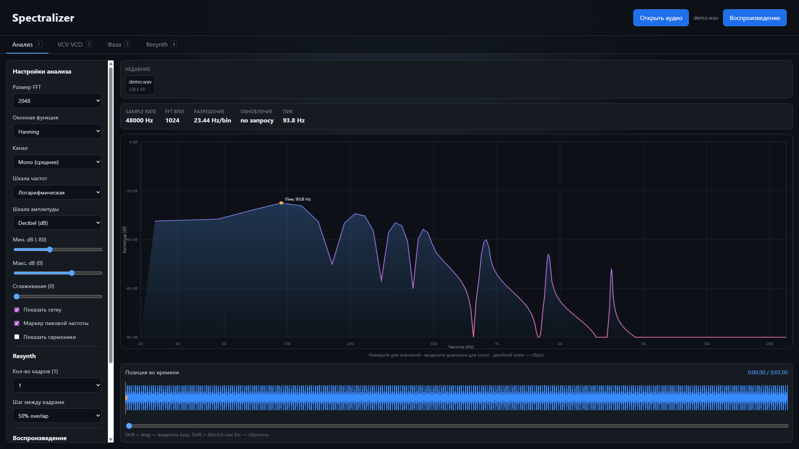

Саунд-дизайнерам
Увидеть fundamental, обертона и пик, снять модель для VCV Rack / additive и понять, чем тембр «толстый».
 Spectralizer
Spectralizer
Веб · Desktop · VST3 / CLAP
Spectralizer — анализатор частотного спектра. В браузере разбирает загруженный файл по гармоникам, фазе и resynth. Плагин в DAW показывает спектр дорожки в реальном времени и не трогает звук.

Увидеть fundamental, обертона и пик, снять модель для VCV Rack / additive и понять, чем тембр «толстый».
Повесить VST на канал или master: спектр живёт вместе с транспортом, на Stop замирает последний кадр.
FFT, окна, log/dB шкалы, фаза и экспериментальный iFFT-resynth — без MATLAB и без облака.
| Что | Для чего | Кому |
|---|---|---|
| Веб | Тот же анализатор в браузере, файл никуда не уходит | Попробовать сразу, без установки |
| Desktop | Файл → спектр, фаза, resynth, таблица VCO | Офлайн, Windows portable .exe |
| VST3 / CLAP | Спектр входа DAW, pass-through, вкладка VCO | FL Studio, Reaper, Bitwig и другие хосты |